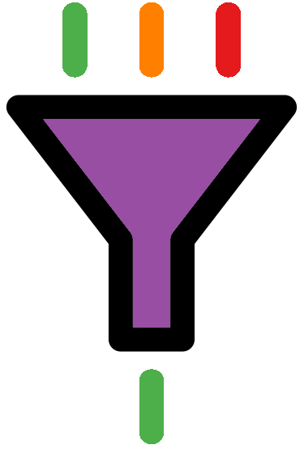

Long read Quality Control
2024-10-23

Chapter 1 Overview
The most popular long read sequencers are produced by ONT and PacBio. It is beneficial to understand how they work and their error profiles to fully utilise the data they produce. This course aims to introduce you to ONT and PacBio quality control and checking.
Sessions will start with a brief presentation followed by self-paced computer practicals guided by an online interactive book. The book will contain theory, practice code, and exercises. Multiple choice questions will guide the interpretation of results.
At the end of this course learners will be able to:
- Explain how ONT & PacBio sequencing works.
- Understand the advantages and disadvantages of both technologies.
- Quality check ONT data with NanoPlot.
- Remove ONT adaptors with Porechop.
- Filter ONT reads by length and quality with Chopper.
- Filter adapters from PacBio data with HiFiAdapterFilt.
- Convert PacBio BAM files to fastq.
- Quality check PacBio CCS reads with RabbitQCPlus.
Table of contents
| Data intro | ONT background |

|
|
| ONT setup | Porechop |

|
|
| NanoPlot | Chopper |

|
 |
| ONT final check | PacBio background |

|
|
| PacBio setup | PacBio filtering |

|
|
| PacBio QC | Appendix |

|
|

This work is licensed under a Creative Commons Attribution-NonCommercial-ShareAlike 4.0 International License.